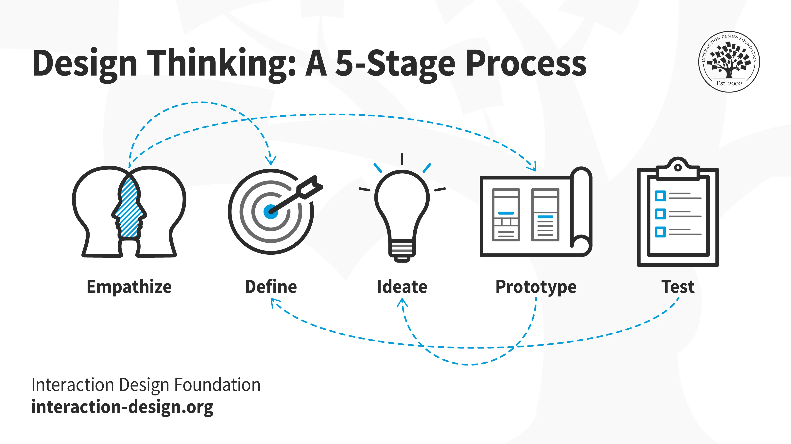

Purpose
What's the purpose of putting you guys through that nightmare of a website? It's twofold.
- Time trials such as these are important in usability studies. In actual time trials, data would be collected, as well as a balking rate. More data, such as the number of clicks, general feedback, etc. would also be collected.
- To show that the user experience is paramount in design. If the first part of the activity tasked you to buy a dog, it would be nearly impossible to do so because the site's so intentionally bad.
It took quite a lot of effort to attempt to break every single design principle out there, and if you got frustrated, we've achieved our goal. We also thought it the website was kinda funny.
Design Thinking
Design thinking is both a mindset and process to drive product development and innovation.
It's a human-centric, user-specific, solution-focused approach to problem solving. Rather than focus on innovation and creating something "novel", the product has to be usable; the user is more important than the product and the solution is more important than the problem.
Although there are different models, applying design thinking to a project typically looks like:
- Empathize: Research users' needs to gain an empathetic understanding of the problem, setting aside personal assumptions.
- Define: Accumulate and analyze information from the Empathize stage to define core problems as problem statements and create "personas", fictional characters that represent the target user.
- Ideate: Generate ideas by thinking outside the box, looking for alternative ways to view the problem, and identifying innovative solutions.
- Prototype: An experimental phase to identify the best possible solution for each problem found, often involving paper prototyping or other inexpensive methods.
- Test: Rigorously test the prototypes. This phase is iterative, allowing for redefining and refining problems and solutions.
This whole process is intended to be iterative and non-linear. These stages aren't sequential steps; they could be run in parallel and reflected back upon until a viable solution is found.
Design thinking doesn't only have to be applied to shipping products either, it can be applied to any problem. The fundementals of focusing on the solution and the user can be applied to any problem and can be incorporated into any process.
User Experience
User experience is the process of enhancing user satisfaction by improving the usability, accessibility, and pleasure provided in the interaction between the user and the product.